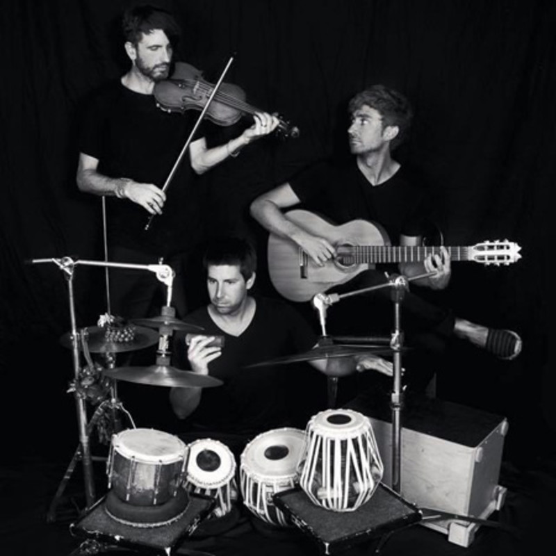
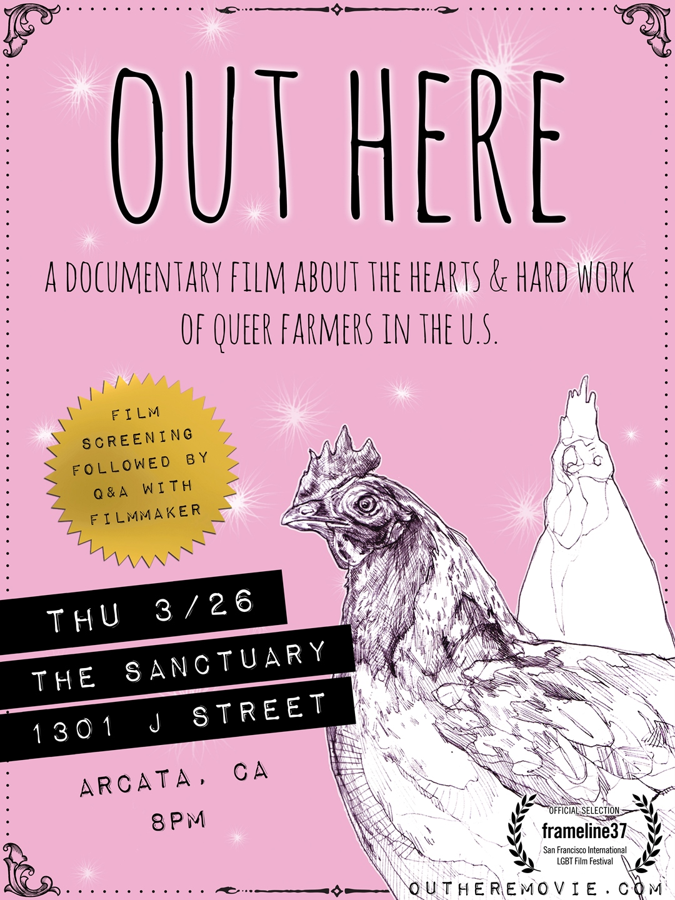
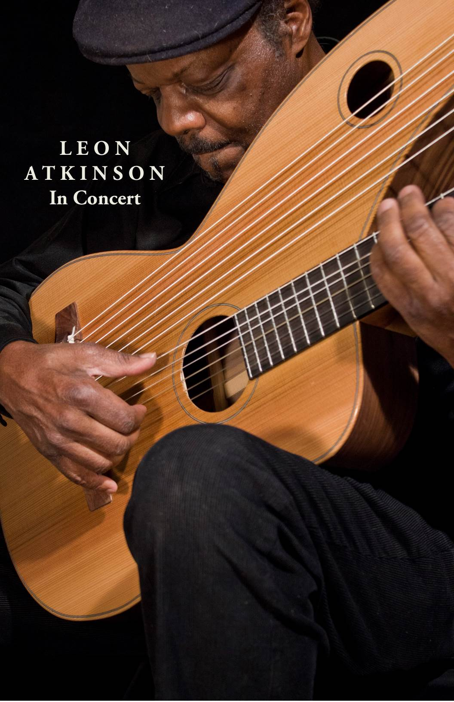

Upcoming Shows at The Sanctuary
Wednesday, March 25th - Therianthrope
$5-$20 sliding scale
8:00PM show
7:30PM doors

Best described as “New World Jazz,” Therianthrope is a trio of nylon string guitarist, Dusty Brough, tabla percussionist, Miles Shrewsbery, and violinist (of Fishtank Ensemble), Fabrice Martinez. Therianthrope’s music is inspired from Indian classical, jazz harmonies, flamenco, gypsy music, killer grooves, and live loops. They unabashedly break down genre barriers while drawing from their own training in their respective music traditions.
Guitarist Dusty Brough combines his roots in Flamenco with Jazz, Folk, Brazilian, Gypsy and Balkan music. Tabla artist Miles Shrewsbery is disciple of Sri Abhiman Kaushal and Pandit Nandkumar Bhatlouande of Hyderabad, India, as well as a co-owner of Avaaz Records. Violinist Fabrice Martinez began his musical journey at the age of eighteen, traveling all across Europe a few times over by hitchhiking with his various instruments in hand until at age twenty he decided to discover the world a bit slower by embarking on a 7 year odyssey through Western and Eastern Europe in a hand-built, mule drawn caravan which took him from the south of France through Italy, Slovenia Hungary and finally Romania. For ten years he performed with his group Croque Mule throughout Europe as well as with Vinicio Capossella and various other Italian and American artists before forming Fishtank Ensemble in 2006.
Check them out here. http://therianthropeband.com/
Thursday, March 26th - Out Here
$5-$20 sliding scale
8:00pm show
7:30p, doors

Out Here is a full-length documentary film created by the Queer Farmer Film Project. Completed after 4 years in production, it looks at the experiences of queer farmers across the country and asks – what does it mean to be a queer farmer, is agriculture a safe space for queer people, and what are the relationships between food production and queerness? It is the filmmaker’s dream that this project will give voice and visibility to queer people in agriculture and inspire a flagrant national discussion about gender and sexuality as they are related to our food system. There will be a Q & A with the filmmaker after the screening.
Check out the website and watch the trailer here. http://outheremovie.com/
Sunday, March 29th - Leon Atkinson
$10-$20 sliding scale
8:00pm show
7:30pm doors

Leon Atkinson has been in love with the guitar since he was three. His schooling in the field began when he was eight with folk guitar, then switching to classical guitar training from Cuban Albert Valdes Blain. While in high school he performed 4-5 nights a week in Greenwich Village coffeehouses. He studied with guitar Maestro Andres Segovia in Spain before beginning his teaching career in classical guitar at the college level. He has played with Bud Powell and Mary Lou Williams. He taught Lenny Kravitz and Peter Croton among other accomplished musicians. The credentials go on and on. He will be performing on two guitars; his traditional six string classical and his classical harp guitar that he co-designed with the Tone Devil Guitar Company.
Learn more and listen at: http://leonatkinsonguitarist.com/
He is offering a workshop on Monday for classical guitar. Email if you are interested in more details.
Future events:
April 10th Friday - Arts Arcata BIG & little show with live music 6-9pm
April 26th Sunday - Edible Mushroom inoculation workshop with Fungaia Farm owner Levon Durr 2-4pm
April 27th Monday - Alba's Edge celtic jazz 8pm
May 1st Friday - Moody Little Sister folk rock soul duo 8pm